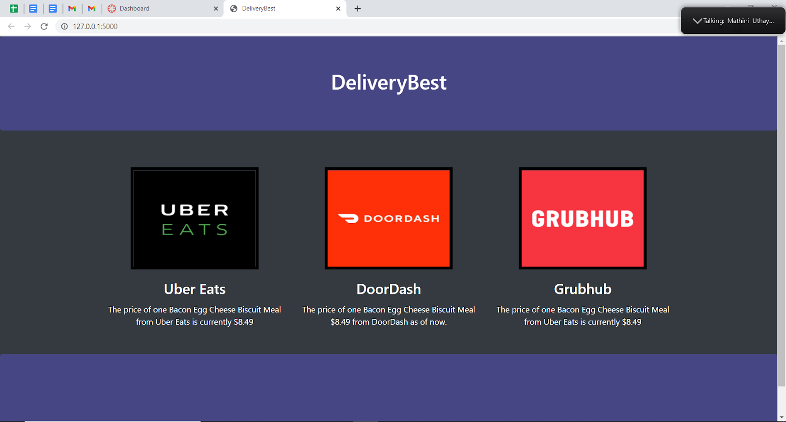

Python Web App: DeliveryBest
January 2021 - February 2021
AP Computer Science Applications
DeliveryBest is an efficient, applicable, and neat Python web application that uses Python libraries Selenium and BeautifulSoup to scrape data from different food delivery systems and then uses the library Flask to compare the prices on screen as a website. This project not only showcases a high level of Python knowledge, but it also ended up becoming an useful product that I am interested in building on further in the future. It was a two person team assignment so I handled the coding while my partner handled the
documentation.
and logs. I was the group leader and I showed commitment, responsibility, and perseverance through our development cycle. This project took many hours and we faced a lot of issues, but with good communication and hard work it all came together in the end. Here is a link to a
screencast
where I explain our code and run the website, and here is a link to the
github
where you can run the code yourself!
